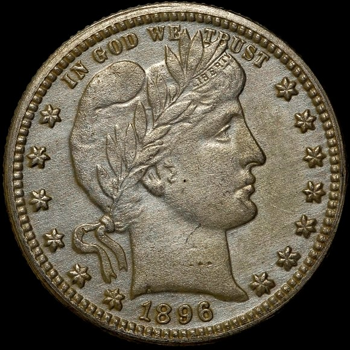
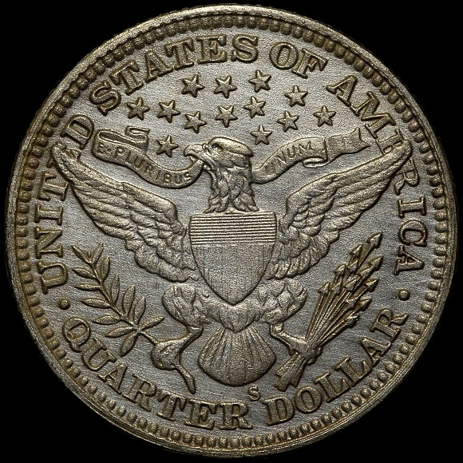

Counterfeit Detection: 1896-S Barber Quarter
Posted on 2/15/2013
The distinctive reed marks on Liberty’s neck help make this fake more recognizable.
The distinctive reed marks on Liberty’s neck help make this fake more recognizable.
The Barber Quarter series has several low mintage key dates: the 1896-S, 1901-S and 1913-S are scarce in all grades and rare in higher grades.
Of the three the 1896-S is the most available, but with only 188,039 pieces struck this issue is still quite elusive. NGC has graded just 669 examples, mostly in low grades (Poor through Good) or NGC Details grades.
The NGC US Coin Price Guide values an 1896-S quarter in Good condition at $870, and prices quickly escalate as the grade increases. At the MS 60 level the price guide reports a value of $8,220. Counterfeit or added mintmark 1896-S quarters are seen only occasionally, although NGC graders did identify a spurious example in a recent submission.
This counterfeit is typical of many of the fakes that have originated in China over the last decade. There are several major issues that become obvious after a cursory inspection. The design elements have fuzzy details, particularly at the stars, letters and shield. The fields are rough and striated with no mint luster. Lastly, the digits in the date are incorrectly shaped, particularly the 1 and the 8. This coin simply looks unlike any legitimate specimen.


Counterfeit 1896-S Barber Quarter
These fakes were almost certainly produced in large quantities with the same characteristic flaws. Besides the diagnostics that identify it as a counterfeit, the distinctive reed marks on Liberty’s neck help make this fake more recognizable. These counterfeits should be easily spotted if you know what to look for.